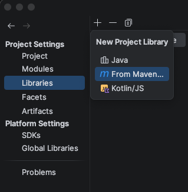

Install Kotest
Tests in this course use the Kotest assertion library. Add it to each new project before using shouldBe, plusOrMinus, or assertSoftly.
- Open the project settings.
- Choose Modules.
- Add a library from Maven.

In the Libraries panel, use the + button and choose From Maven. - Enter
io.kotest:kotest-assertions-core-jvm:5.5.0, then add or download the library.
Kotest should now appear in the project's External Libraries section. At the top of a Kotlin file that uses these assertions, import the names you need:
import io.kotest.assertions.assertSoftly
import io.kotest.matchers.doubles.plusOrMinus
import io.kotest.matchers.shouldBeActual on the Left, Expected on the Right
In this course, a test is also a small example of intended behavior. Read this line from left to right:
4 * 3 shouldBe 12Kotlin computes the expression on the left. The value on the right is the expected answer. If both sides match, the test passes. If they differ, the test fails and IntelliJ reports the mismatch.
7 - 2 shouldBe 5 // passes
7 - 2 shouldBe 6 // failsA failed test is useful information. It means the computed result and the stated expectation do not agree. Either the program or the expectation needs attention.
Some Decimal Answers Are Approximate
A Double stores a decimal number with limited precision. For a repeating decimal, we often test a small acceptable range instead of one exact value.
2.0 / 3.0 shouldBe (0.667 plusOrMinus 0.001)This expectation accepts a result within 0.001 of 0.667. Read it as, "two thirds should be approximately 0.667." The parentheses keep the expected value and its tolerance together.
Group Several Checks with assertSoftly
assertSoftly groups related checks. If more than one check fails, it reports all of the failures together instead of stopping at the first one.
assertSoftly {
4 * 3 shouldBe 12
"map".uppercase() shouldBe "MAP"
2.0 / 3.0 shouldBe (0.667 plusOrMinus 0.001)
}The ordinary shouldBe checks exact equality. Use plusOrMinus only when a Double result is expected to be close to a value rather than exactly equal to it.
Practice
- In
9 + 4 shouldBe 13, which side is computed? - Would
9 + 4 shouldBe 14pass or fail? - What does
plusOrMinus 0.01add to a decimal expectation? - Where should Kotest appear after it is installed?
- Why might a file use
assertSoftly?
Check your answers
1. Kotlin computes 9 + 4 on the left.
2. It fails because 9 + 4 produces 13, not 14.
3. It adds a tolerance: a small range of values close enough to the expected decimal.
4. It should appear under External Libraries.
5. It groups related checks and reports all of their failures together.